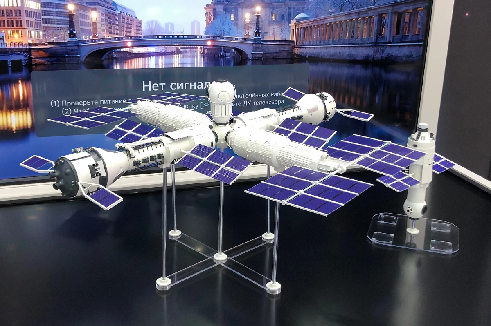

Национальный проект «Космос»
С 2026 года в России стартовал масштабный национальный проект «Космос», рассчитанный до 2036 года. Общий бюджет на эти десять лет превышает 4,4 триллиона рублей. Впервые развитие космической отрасли выделено в отдельный национальный проект, что подчёркивает его стратегическое значение для страны. Программа включает в себя десятки запусков, создание новой орбитальной станции, амбициозные научные миссии и разработку перспективной техники.

Российская орбитальная станция (РОС)
Главным проектом в пилотируемой космонавтике станет создание Российской орбитальной станции. Согласно утверждённому сценарию, РОС начнут развёртывать в декабре 2027 года с запуска научно-энергетического модуля с космодрома Восточный. Станцию планируется строить в составе российского сегмента МКС, а после завершения международного проекта она отстыкуется и продолжит самостоятельный полёт. Новая орбита позволит станции видеть всю территорию России, включая Арктику, что даст уникальные возможности для наблюдения и связи.
Лунная программа и Венера
Российская академия наук работает над лунной программой до 2060 года. В ближайшие десять лет запланированы запуски автоматических станций для изучения и освоения спутника Земли. После запуска орбитальной «Луны-26» последуют посадочные миссии «Луна-27» и, в районе 2035 года, станция для доставки лунного грунта. Особое внимание учёных привлекают приполярные районы Луны, где в затенённых кратерах может находиться водяной лёд — ключевой ресурс для будущих баз. Амбициозная задача — создание первой в мире напланетной атомной электростанции на Луне, завершение строительства которой намечено на 2036 год.
Лунная программа станет лишь первым шагом. Вслед за ней российские учёные планируют заняться Венерой — флагманский проект «Венера-Д» предназначен для изучения самой загадочной планеты Солнечной системы. Его запуск намечен после 2030 года.
Астрофизика и новые ракеты
Вслед за Луной и Венерой российские учёные продолжат изучение дальнего космоса. Для этих целей создаются новые орбитальные обсерватории. Для осуществления всех этих грандиозных планов потребуются новые ракеты. Помимо семейства «Ангара», которая станет основным носителем для модулей РОС, разрабатывается ракета сверхтяжёлого класса. Она создаётся на базе наработок по легендарной «Энергии» и двигателей РД-171, чтобы обеспечить выведение тяжёлых грузов для лунной программы.
Космическая отрасль — это локомотив для развития нашей страны. И, конечно, нужно вести активную научную деятельность во всех направлениях, чтобы оставаться великой космической державой.